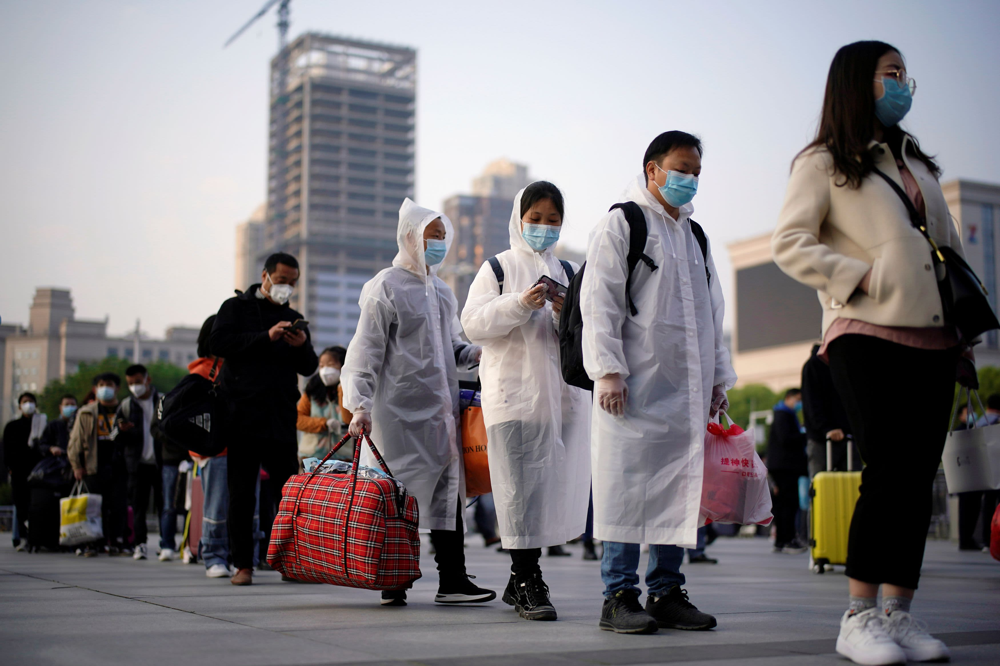

El acceso a la sanidad

Durante la pandemia, muchos sistemas de salud implementaron consultas médicas virtuales para mantener el acceso a la atención médica mientras se reducían los riesgos de contagio. Esto incluyó consultas por videollamada, plataformas de seguimiento de pacientes crónicos y herramientas de diagnóstico remoto.